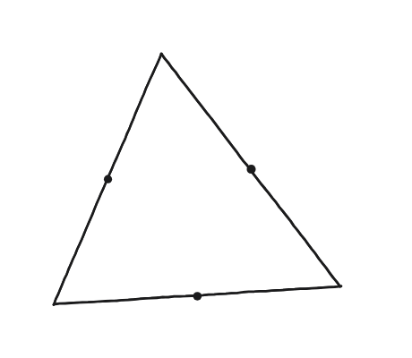
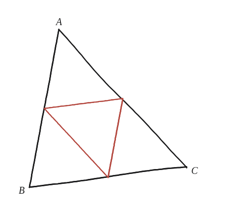
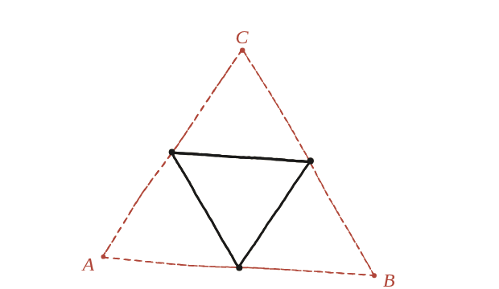

Els punts mitjans dels costats d'un triangle són prou informació per reconstruir el triangle? I per als polígons de quatre costats?

Dues preguntes, no una
El triangle i el quadrilàter són casos genuïnament diferents: no hi ha cap raó per suposar que tinguin la mateixa resposta. Cal tractar-los per separat, sense donar per fet que el que valgui per a un valgui també per a l'altre.
El triangle: el triangle medial ja diu prou
Els tres punts mitjans d'un triangle formen el triangle medial: semblant a l'original, a escala 1/2 i girat 180°. Si es coneix el triangle medial, ja se'n coneix l'orientació i la mida —només falta "desfer" l'escala i el gir per recuperar l'original.

Desfer-ho: només hi ha una manera
Cada vèrtex del triangle original és el simètric d'un vèrtex del triangle medial respecte del punt mitjà del costat oposat del medial —o, dit d'una altra manera, cada costat del triangle original passa pel punt mitjà corresponent i és paral·lel al costat oposat del medial, a doble llargada. Aquesta construcció no deixa cap marge d'elecció: donat el triangle medial, hi ha un únic triangle original que hi encaixa.

El quadrilàter: es coneix la forma, no la posició
Amb un quadrilàter, la situació canvia. Els quatre punts mitjans dels seus costats formen sempre un paral·lelogram —ja demostrat a la Qüestió 16—, i això és tot el que se'n pot assegurar amb certesa. El que no es pot recuperar és la posició exacta dels quatre vèrtexs originals: múltiples quadrilàters diferents, de formes ben diferents entre si, poden compartir exactament els mateixos quatre punts mitjans.
Sí per al triangle: els punts mitjans dels seus costats en determinen un únic original, perquè el triangle medial (semblant, escala 1/2, girat 180°) es pot "desfer" d'una sola manera. No per al quadrilàter general: els quatre punts mitjans sempre formen un paral·lelogram (Qüestió 16), però aquesta única condició no basta per recuperar la posició exacta dels quatre vèrtexs originals —molts quadrilàters diferents poden compartir els mateixos quatre punts mitjans.
Comprovació
Amb un triangle medial de costats 3, 4, 5: el triangle original ha de tenir costats 6, 8, 10 —el doble de cadascun, en el mateix ordre, sense cap altra possibilitat.